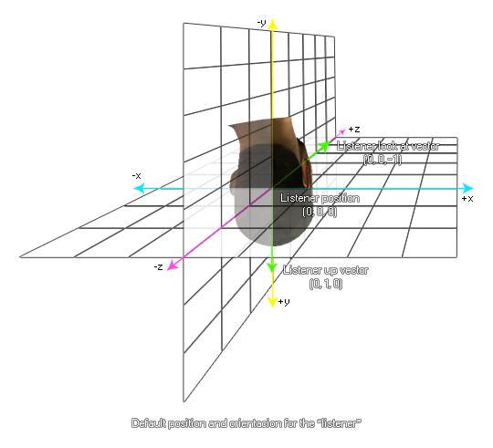
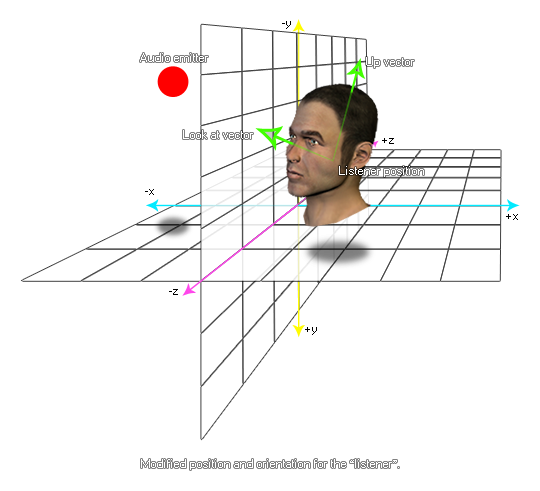

Con esta función puede cambiar la orientación del oyente dado dentro del espacio de audio 3D. El índice de escucha predeterminado es 0, pero puede usar la función audio_get_listener_info para obtener los diferentes índices disponibles para la plataforma objetivo.
La vista de vector y vector ascendente se basa en los valores que se resuelven desde las posiciones relativas x, yyz dadas, y por defecto a (0, 0, -1) para el vector de observación y (0, 1, 0) para el vector ascendente, como se muestra en la siguiente ilustración: 
Cambiar la orientación del oyente dada con esta función cambiará la percepción del sonido creado por los emisores de audio alrededor de la sala de juego por parte del jugador de su juego. En el siguiente ejemplo, los sonidos creados por el emisor cuando el oyente está en la posición predeterminada aparecerían desde abajo y hacia la derecha del oyente, pero con la nueva posición y orientación del oyente, ahora se percibirán como próximos desde arriba y hacia la derecha. 
audio_listener_set_orientation(index, lookat_x, lookat_y, lookat_z, up_x, up_y, up_z);
| Argumento | Descripción |
|---|---|
| index | El oyente para establecer la orientación de. |
| lookat_x | El vector x look (predeterminado 0). |
| lookat_y | El vector y look (predeterminado 0). |
| lookat_z | El vector de aspecto z (predeterminado -1). |
| up_x | El vector x up (predeterminado 0). |
| up_y | El vector y up (por defecto 1). |
| up_z | El vector z up (predeterminado 0). |
N/A
var _vmat =
camera_get_view_mat(view_camera[0]);
audio_listener_set_position(global.Player_Listener, _vmat[0],
_vmat[1], _vmat[2]);
audio_listener_set_orientation(info[? "index"], _vmat[3], _vmat[4],
_vmat[5], _vmat[6], _vmat[7], _vmat[8]);
El código anterior recupera la matriz de vista para la vista de cámara [0] y luego la usa para establecer la posición y la orientación del oyente de audio para el oyente con el ID almacenado en la variable global "Player_Listener".